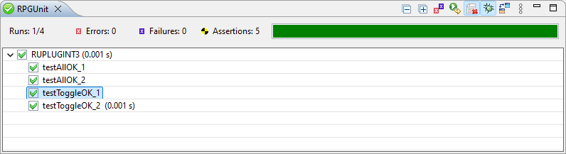
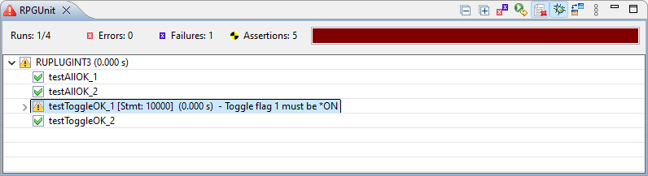
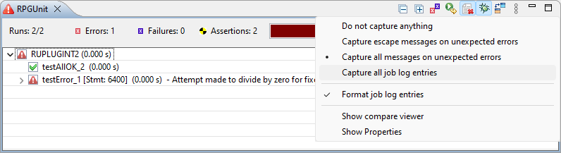

test
in order to be accepted by the RPGUnit utility. But that also means that you must not
export procedures, starting with test, that are not intended to be a test
case.
In order to use RPGUnit procedures you need to add copy book TESTCASE
to your source member:
For members:
/include qinclude,TESTCASE iRPGUnit Test Suite
/include qinclude/TESTCASE.rpgle iRPGUnit Test Suite
Test case examples
One or more test cases make a test suite. In RPG we use a service program for that.
A test suite (service program) is compiled with command RUCRTRPG.
RUCRTRPG TSTPGM(RPGUNIT/RUPLUGINT1) SRCFILE(RPGUNITT1)
Member QTEMPLATE.RPG is
an example of a test suite. It does not do any harm but produces a spooled file with the
execution flow.
Note: You need to specify a named source member and compiler option *EVENTF in
order to get back your compile result in RDi. Furthermore parameter SRCMBR
has to be set to the name of source member to enable RDi to load the compile
result. For example:
It is also recommended to specify |
RUCALLTST. By default the command executes all test cases of a
test suite. If you want to run a single test case you can specify the name
of the test case (procedure name) at parameter TSTPRC at the
command prompt.
RUCALLTST TSTPGM(RUPLUGINT1)
RUCALLTST TSTPGM(RUPLUGINT1) TSTPRC(TESTALLOK_2)
The result is shown in view 'iRPGUnit':

From there you can choose between the following options:The following options are available from the context menu:

| Known issue: The stream file editor cannot be positioned to the line with the unit test error, as it is possible with the LPEX source member editor. |
Header properties:
| Runs | : | Number of last executed test cases / Total number of test cases in view |
| Errors | : | Total number of errors in view |
| Failures | : | Total number of failed test cases in view |
| Assertions | : | Total number of executed assertions in view |
Result of a failed unit test:

Use the properties view to see the properties of a selected line in a grid:
By default, the execution time is hidden in the properties view. You can display it with the "Show Advanced Properties"
 button.
button.
| Hint: Disable preference option Show result view to keep the focus on the view where you started a unit test after a test run. The RPGUnit result view displays a green or red icon on the tab of the view to show the result. |
| Indicates that the unit test finished successfully. | ||
| Indicates that the unit test ended with errors. Check the result view for details. | ||
| Indicates that all unit tests had been canceled by the user. Check the result view for details. |
In case that a unit test ended with errors, it may be helpful to see the messages of the job log. Use the preferences or the view menu to set the appropriate message capturing level:

| Do not capture anything | - | No messages are captured from the job log. |
| Capture escape messages on unexpected errors | - | Escape messages are captured from the job log, when a test case ended with errors. |
| Capture all messages on unexpected errors | - | All messages of the job log are captured, when a test case ended with errors. |
| Capture all job log entries | - | All messages of the job log are captured at any time. |
| Format job log entries | - | Specifies whether or not the job log entries are formatted when appended to the Commands Log view. |
| Show compare viewer | - | Shows/hides the viewer for comparing the expected and actual values. |
| Show properties | - | Opens the properties with for displaying the properties of an entries of the RPGUnit view. |
Captured messages are displayed in the Commands Log view.
The '«' character indicates the end of a value to better detect trailing spaces.
The content of the compare viewer can be horizontally scrolled with:
The differences are displayed with the Conflicting change color defined at Preferences - Colors and Fonts.
The copy button next to the Expected and Actual labels copies the value to the clipboard. Its behavior can be modified like this: